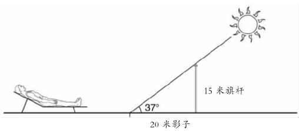

科学最重要的目的之一就是试图解释我们周围世界中所发生的一切。有时候，我们会出于实际的目的寻求解释。例如，我们也许想知道为什么臭氧层损耗的速度这么快，从而试着对它采取一些措施。在其他情况下，我们寻求科学解释仅仅是出于猎奇心理——我们想对这个世界了解地更多。在历史上，对科学解释的追求是由这两个目标共同推进的。
在提供解释这一目的上，现代科学常常能够成功。例如，化学家能够解释为什么钠在燃烧时变黄。天文学家能够解释为什么日食会出现。经济学家可以解释为什么日元在20世纪80年代贬值。遗传学家可以解释为什么男性秃头易于在家族内部遗传。神经生理学家可以解释为什么极度缺氧会导致大脑损伤。也许你还能想到许多其他成功的科学解释的例子。
但是，科学解释确切地说是 什么呢？说一个现象能够被科学进行“解释”究竟是什么意思？这是一个自亚里士多德开始就引起哲学家思虑的问题，但是我们将以美国哲学家卡尔·亨普尔在20世纪50年代对科学解释作出的著名阐释作为论述的起点。亨普尔的阐释被称为解释的覆盖律 模型，其名称的由来在下文会有交待。
亨普尔的覆盖律解释模型
覆盖律模型背后的基本思想是直截了当的。亨普尔指出，科学解释通常是在回应被他称为“寻求解释的原因类问题”时给出的。这些问题包括诸如“为什么地球不是完全圆球形的？”、“为什么女人的寿命比男人长？”等——它们都寻求解释。给出科学解释因此就成了对寻求解释的原因类问题提供满意的答案。若能确定这个答案必须具有的本质特征，我们就会知道科学解释指的是什么。
亨普尔认为，科学解释的典型逻辑结构和论证是一样的，即由一系列前提得出一个结论。结论断言待解释的现象实际发生了，前提则告诉我们这个结论为什么正确。这样，我们可以设想有人询问为什么糖在水中会溶解。这就是一个寻求解释的原因类问题。要回答它，亨普尔认为，我们必须构建一个论证，其结论是“糖在水中溶解”，前提则告诉我们为什么这个结论是正确的。如此一来，为科学解释提供描述的任务就变成了准确地刻画一组前提和一个结论之间必定具有的关系，从而把前者看做对后者的解释。这就是亨普尔为自己设定的问题。
亨普尔对于这一问题的回答分三个层次。首先，前提应该保证推出结论，即论证应该是演绎推理。第二，前提应该全部为真。第三，前提应该至少包含一个普适定律。普适定律指的是诸如“所有的金属都导电”、“一个物体的加速度与它的质量成反比变化”、“所有的植物都含有叶绿素”等等；它们与诸如“这一片金属导电”、“我书桌上的植物含有叶绿素”等特殊事实相对。普适定律有时也被称为“自然律”。亨普尔承认，科学解释也会像求助于普适定律那样求助于特定事实，但是他认为至少一个普适定律总是必需的。因此按照亨普尔的观念，解释一个现象就是去表明它的出现可以从一个普适定律演绎地推出，也许还要补充其他的定律和/或特定事实，它们都必须是正确的。
为了解释这一观点，假设我正尝试解释为什么书桌上的植物死掉了。我可能给出如下解释：我学习的地方光线太暗，阳光无法照射到植物上；而阳光是植物进行光合作用所必需的；并且没有光合作用，植物就不能制造它存活所必需的碳水化合物，因此就会死掉。这一解释完全符合亨普尔的解释模型，它对植物死亡的解释是通过从两个正确的定律（阳光是光合作用所必需的以及光合作用是植物存活所必需的）和一个特定事实（植物没有受到任何阳光的照射）进行演绎而得出的。由于这两个法则和特定事实的正确性，植物的死亡就不得不 发生了；于是前者构成了对后者的一个很好的解释。
亨普尔的解释模型可以用如下示意图来描述：
普适定律
特定事实
=〉
待解释的现象
待解释的现象被称为被解释项 ，用做解释的普适定律和特定事实被称为解释项 。被解释项本身或者是一个特定事实，或者是一个普适定律。在上面的例子中，它是一个特定事实——我的植物的死亡。但是有时候，我们想要解释的对象具有普遍性。例如，我们会希望解释在太阳下暴晒导致皮肤癌的原因。这是一个普适定律，而不是特定事实。为了解释它，我们需要从更加基础的法则——大约是光线对皮肤细胞影响的法则——出发进行演绎，并结合关于太阳辐射能量的特定事实。因此，不管被解释项（即我们试图解释的事物）是特定的还是普通的，科学解释的结构在本质上是一样的。
很容易看出为什么亨普尔的模型被称为覆盖律解释模型：按照这一模型，解释的本质就是表明待解释的现象是被某个自然普适定律所“覆盖”的。这种观点确实有吸引人之处。因为，表明一个现象是某个普适定律的结果确实在某种意义上祛除了它的神秘性——使它更易于理解。事实上，科学解释的确经常符合亨普尔所描述的形式。例如，牛顿解释了为什么行星在椭圆轨道上围绕太阳旋转的现象，表明这可以由他的万有引力原理以及一些次要的附加假设演绎地推导出来。牛顿的解释完全符合亨普尔的解释模型：这里对现象的解释方式是，在自然律以及一些附加事实面前，一个现象不得不如此。牛顿之后，为什么行星轨道是椭圆形的这个问题就不再神秘了。
亨普尔知道，并不是所有的科学解释都完全符合他的模型。例如，如果你问人为何雅典总是沉浸在烟雾之中，他们可能会说：“因为汽车的尾气污染。”这是一个完全可以接受的科学解释，尽管它并没有涉及任何定律。然而亨普尔会说，如果该解释被详细地表达出来，定律就会被涉及。可能存在一个类似这样的定律：“如果一氧化碳以足够大的密度被排放到地球大气层，烟雾云层就会形成。”对于雅典为什么沐浴在烟雾中的充分解释将会援引这一定律，以及如下事实：汽车尾气中含有一氧化碳；雅典有很多汽车。在实践中，我们不会作出如此详细的解释，除非是学究气十足的人。但是一旦我们想解释清楚，它就会同覆盖律形式相当吻合。
从他关于解释与预测之联系的的模型中，亨普尔得出了一个有趣的哲学结论。他认为，解释和预测是同一个硬币的两面。无论何时对一个现象进行覆盖律解释，我们本来都可以利用所引用的规律和特定事实预测出该现象的发生，即使我们并不知晓。为了解释这一点，我们再看一下牛顿对于行星轨道为什么是椭圆的解释。这一事实早在牛顿用他的引力理论进行解释之前就为人所知——发现者是开普勒。但是即使不为人知，牛顿本来也可以通过引力理论预测出来，因为他的理论与次要的附加假设相结合必然推出行星的轨道是椭圆的。亨普尔是通过以下说法来表达这一点的：每一个科学解释都潜在地是一个预测——它可以用来预测相关现象，即使该现象还没有被了解。亨普尔认为反过来说也是正确的：每一个可靠的预测都潜在地是一种解释。为了说明这一点，假设科学家根据山区大猩猩生活环境遭破坏的信息，预测它们将会在2010年前灭绝。假设这一预测被证明是正确的。按照亨普尔的观点，他们在大猩猩灭绝之前用来进行预测的信息将可以在灭绝发生之后被用以解释同一事实。解释和预测在结构上是对称的。
尽管覆盖律模型很好地说明了许多现实的科学解释的结构，它仍然面临着许多棘手的反例。这些反例有两类。一方面，有一些真正科学解释的情形并不符合覆盖律模型，即使近似符合也算不上。这些情形表明亨普尔的模型太严格了——它把一些真正的 科学解释排除在外了。另一方面，有一些情形确实 符合覆盖律模型，但是直观上并不算真正的科学解释。这些情形又表明亨普尔的模型太随意了——它纳入了本该被排除在外的情况。我们将把焦点集中在第二类反例上。
对称问题
假设你正躺在阳光明媚的沙滩上，注意到一根旗杆在沙地上投射了一个20米长的影子（参见图8）。

图8 当太阳在头顶37°仰角的位置时，一根15米长的旗杆在沙滩上投射出一个20米长的影子。
有人要求你解释为什么影子是20米长。这是一个寻求解释的原因类问题。一个合理的答案也许是这样的：“来自太阳的光线射到了旗杆上，旗杆整整15米高。太阳的仰角是37°。由于光线照射路径是直线式的，简单的三角计算（tan37°=15/20）表明旗杆会投下20米长的影子。”
这看起来像是一个非常好的科学解释。通过改写使之与亨普尔的格式相一致，我们可以看出它是符合覆盖律模型的：
旗杆的高度和太阳的仰角，连同光走直线的光学定律和三角运算法则一起，演绎推导出影子的长度。由于这些定律法则是正确的，并且由于旗杆的确是15米高，这一解释就精确地满足了亨普尔模型的要求。到现在为止，一切都很顺利。问题产生于下面的情况：假设我们将被解释项——影子20米长——换成旗杆15米高这一特定事实。结果是这样的：
这一“解释”显然也符合覆盖律模型。旗杆投射影子的长度和太阳的仰角，连同光走直线的光学定律和三角运算法则一起，演绎推导出旗杆的高度。但是，若把这看做是对于旗杆为什么是15米高的解释 ，似乎非常怪异。旗杆为何是15米高的真正解释，推测起来应该是木匠故意地把它做成这样——它和它投射的影子长度毫无关系。因此，亨普尔的模型太不严格：它把显然不是科学解释的情形也看做科学解释。
旗杆例子的一般寓意是，解释的概念显示了一种重要的不对称。在给定相关定律法则和附加事实的情况下，旗杆的高度为影子的长度提供了解释，但是并不存在反之亦然的情况。一般来说，在给定相关定律法则和附加事实的情况下，如果x为y提供了解释，则在给定同样定律法则和事实的情况下，y为x提供解释将不会是正确的。这有时也被说成：解释是一种不对称关系。亨普尔的覆盖律解释模型没有考虑这种不对称问题。因为，正如我们可以在给定定律和附加事实时，由旗杆的高度推出影子的长度，我们也可以由影子的长度推出旗杆的高度。换言之，覆盖律模型暗示着解释应该是一种对称关系，但事实上解释具有不对称性。因此，亨普尔的模型没有完全弄清什么才是科学解释。
对于亨普尔的解释和预测是同一硬币之两面的理论，影子和旗杆的案例也可以提供一个反例。原因很显然。假设你不知道旗杆有多高。如果有人告诉你它现在投下的影子是20米长、太阳在头上方37°的位置，在了解相关光学和三角运算定律法则的情况下，你将能够预测 出旗杆的高度。但是正如我们刚刚看到的，这一信息显然并没有解释 旗杆为什么是那个高度。所以，在这一例子中预测和解释分道扬镳了。为我们未知的事实提供预测的信息并不能在我们知道之后用于解释这同一个事实，这是亨普尔理论的吊诡之处。
不相关性问题
假设一个小孩在一家医院一个挤满孕妇的房间里。小孩注意到房间里有一个人——一个名叫约翰的男性——没有怀孕，就问医生为什么。医生回答说：“约翰在过去的几年中一直有规律地服用避孕药。有规律地服用避孕药的人永远不会怀孕。因此，约翰没有怀孕。”为了讨论的需要，我们假设医生说的话是正确的——约翰有精神病并且确实服用了避孕药，他认为避孕药对他有益。即使这样，医生给小孩的答复也显然没有什么益处。很显然，约翰不怀孕的正确解释在于他是一名男性，而男性是不可能怀孕的。
但是，医生给予小孩的解释完全符合覆盖律模型。医生是从服用避孕药的人不会怀孕这一普适定律以及约翰一直在吃避孕药这一特定事实演绎推导出待解释的现象——约翰没有怀孕。由于普适定律和特定事实两者都是正确的，并且由于它们的确能保证推出被解释项，按照覆盖律模型，医生对于约翰为什么没有怀孕给出了一个相当充分的解释。但是，事实上他当然没有给出。所以覆盖律模型又是过于宽泛了：它把直观上并非科学解释的解释也作为科学解释接纳了进来。
这里总体的原则是，关于一个现象的良好解释应该包含与现象的发生相关 的信息。这就是医生给孩子的回答出错的地方。尽管医生告诉小孩的话完全正确，约翰一直在服用避孕药的事实却与他没有怀孕的现象毫不相关，因为即使没有服用避孕药他也不会怀孕。这就是医生的回答算不上一个好答复的原因。亨普尔的模型并没有考虑到我们的解释概念的这一关键特征。
解释和因果性
由于覆盖律模型遇到了如此多的问题，寻找理解科学解释的其他替代路径就很自然了。有些哲学家认为问题的关键在于因果性这一概念。这是一个相当吸引人的主张，因为在多数情况下，解释一个现象事实上就是在解释是什么导致了它的产生。例如，一位事故调查者正在试图解释一起飞机坠毁事故，他正在寻找的显然是坠毁的原因。的确，“飞机为什么坠落”和“什么是飞机坠毁的原因”这两个问题实际上意思相同。同样，如果一个生态学家正在试图解释热带雨林地区的生物多样性为何不如过去，他显然正在寻找生物多样性减少的原因。解释和因果性这两个概念之间的联系相当紧密。
受这一联系的影响，许多哲学家已经放弃了对解释的覆盖律阐释而转向基于因果性的阐释。尽管内容有所变化，但这些解释背后的基本思想都是：解释一个现象无非就在于指出是什么导致了它的产生。在某些情况下，覆盖律和因果解释方式之间的差别实际上并不太大，因为从一个普适定律演绎推导出一个现象的发生常常就是 给出它的原因。例如，再回顾一下牛顿对于行星轨道为什么是椭圆的解释。我们看到，这种解释是符合覆盖律模型的——牛顿从他的引力定律，再加上一些附加事实，推导出了行星轨道的形状。然而牛顿的解释也是一种因果方式，因为椭圆形的行星轨道是由太阳和行星之间的引力作用导致的。
但是，覆盖律和因果解释并非完全等同——在某些情况下它们是有分歧的。事实上，许多哲学家之所以倾向于解释的因果性阐释，正因为相信它可以避免覆盖律模型面临的一些问题。回顾一下旗杆的问题。为什么直觉告诉我们，在给定定律的情况下，旗杆高度为影子的长度提供了解释，但是却不能反之亦然？可信的回答是，因为旗杆的高度是导致影子20米长的原因，而20米长的影子却不是导致旗杆15米高的原因。所以，与覆盖律模型不同，解释的因果性阐释方式在旗杆案例中给出了“恰当的”解答——它考虑到了我们的直觉，即不能通过指出旗杆投射影子的长度来解释旗杆的高度。
旗杆问题的一般结论是，覆盖律模型不能体现解释是一种不对称关系这个事实。而因果性显然也是一个不对称关系：x是y的原因，y却并不是x的原因。例如，如果电路短路导致了火灾，显然火灾不会是导致短路的原因。因此，提出解释的不对称性来源于因果关系的不对称性似乎相当合情合理。如果解释一个现象就是去说出导致它产生的原因，那么，由于因果性是不对称的，我们就该预料到解释也具有不对称性——事实正是如此。覆盖律模型之与旗杆问题相冲突，正在于它试图在因果性之外分析科学解释的概念。
避孕药的例子也同样如此。约翰服用避孕药并没有解释他为什么没有怀孕，因为避孕药并不是导致他不怀孕的原因。实际上，约翰的性别才是他不怀孕的原因。正缘于此，我们认为“约翰为什么没有怀孕？”的正确答案是“因为他是一个男人，男人是不可能怀孕的”，而不是医生提供的答案。医生的答案满足了覆盖律模型，但是，由于没有正确指出我们希望解释的现象产生的原因，它不构成一个真正的解释。我们从避孕药的例子中得到的一般结论是，一个真正的科学解释必定包含与被解释项相关的信息。实际上也就是说，解释应该告诉我们被解释项产生的原因。基于因果性阐释的科学解释与不相关性问题并不冲突。
亨普尔没有考虑到因果性与解释之间的密切联系，这一点很容易遭到人们的批评，并且许多人已经提出了批评。在某些方面，这种批评有失公允。亨普尔继承了被称为经验论 的哲学纲领，而经验论者在传统上非常怀疑因果性这个概念。经验论认为我们所有的知识都来源于经验。我们在上一章提到过的大卫·休谟就是一位重要的经验论者，他认为因果联系不可能被经验到。他由此宣称因果联系是不存在的——它们只是我们想象中的虚构之物！这是一个让人很难接受的结论。摔下玻璃花瓶使它们破碎确实是一个客观事实吗？休谟认为不是。他承认，大多数玻璃花瓶在摔落之后发生破碎是一个客观事实，但我们关于因果性的观念包含的内容要比这更多。它包括在摔下和破碎之间的一个因果联系的观念，即前者导致了后者。按照休谟的观点，在世界上是找不到这种联系的：一个花瓶被摔，随后它破碎了，这就是我们看到的全部。我们并没有在第一个事实和第二个事实之间经验到任何因果联系的存在。因果性因此是一个虚构之物。
大多数的经验论者并没有完全接受这一令人惊讶的结论。但是由于休谟的主张，他们已经倾向于把因果性看做一个需要谨慎对待的概念。因此对于一个经验论者来说，使用因果性概念来分析解释这一概念似乎有违常理。如果一个人的目标是像亨普尔那样去澄清科学解释的概念，那么使用本身就需要澄清的概念来进行分析就没有什么意义。对于经验论者来说，因果性的确需要在哲学上加以澄清。因此，覆盖律模型没有关注因果性并不仅仅是亨普尔的疏忽。最近几年，经验论的受欢迎度在某种程度上已经降低了。另外，许多哲学家已经得出结论，认为因果性概念尽管在哲学上存在问题，但对于我们了解世界仍然不可缺少。因此，对科学解释基于因果性的阐释方式似乎比它在亨普尔时代更为人所接受。
对于解释基于因果性所作的阐释确实很好地抓住了许多实际科学解释的结构，但是仅止于此吗？许多哲学家认为不是这样，理由在于某些科学解释似乎并不具有因果性。一类例子来自科学中所谓“理论上的同一”。理论同一把一个概念等同于通常位于不同科学领域的其他概念。“水是H2 O”就是一个例子，“温度是分子的平均动能”也是。在这两个例子中，一个熟悉的日常概念与一个比较深奥的科学概念是等同或者同一的。通常，理论同一为我们提供了类似于科学解释的东西。当化学家发现水是H2 O的时候，他们也就解释了水是什么。同样，当物理学家发现一个物体的温度是它分子的平均动能的时候，他们也就解释了温度是什么。而这两个解释都不是因果性的。由H2 O组成并不导致 一种物质成为水——它仅仅是 水。拥有特定的分子平均动能并不是导致 一个液体具有它本身的温度——它仅仅是拥有那样的温度。如果这样的例子被接受为合理的科学解释，它们就表明，基于因果性阐释的解释并不能代表全部解释。
科学能解释一切吗？
现代科学能够解释我们所居住世界的大量事实。但是也有许多事实还没有得到科学的解释，或者至少解释得并不全面。生命的起源就是这样的一个例子。我们知道大约40亿年前，在原始汤之中出现了能够进行自我复制的分子，生命进化就从那里开始。但是，我们却不知道这些自我复制的分子最初是如何产生的。另一个例子是孤僻儿童往往具有非常好的记忆力这一现象。对于孤僻儿童的许多研究已经证实了这一点，但是至今还没有任何人成功地作出解释。
许多人相信，最终科学将能够解释这类事实。这似乎是一个相当合理的观点。分子生物学家们正致力于研究生命起源，只有悲观主义者才会说他们永远不会解决这一问题。诚然，问题并不简单，特别是，我们想要了解的是40亿年前地球上的环境条件。但即便如此，我们也没有理由认为生命的起源将永远无法解释。孤僻儿童的超强记忆力的例子也是这样。记忆力科学的研究仍处于初期，关于孤僻症的神经学基础仍有大量问题有待发现。显然我们不能保证这些问题最终一定可以得到解释。但是鉴于现代科学已经提出了大量成功的解释，认为今天许多有待解释的事实最终也能得到解释，必定是一个明智的判断。
但是这意味着原则上科学能够解释一切吗？或者说存在着某些一定永远能避开科学解释的现象吗？这不是一个容易回答的问题。一方面，断言科学能够解释一切似乎过于自负。另一方面，断言某个特定现象永远不能被科学地解释又似乎过于目光短浅。科学的发展和变化太迅速，从今天科学的观点来看似乎完全无法解释的现象，也许在明天就很容易解释了。
按照某些哲学家的观点，科学之所以永远不能解释一切，这有着纯逻辑学上的原因。为了解释某件事，无论它是什么，我们需要援用其他的事情。但是为第二件事提供解释的是什么呢？为了说明的需要，我们来回顾一下牛顿使用引力定律解释不同领域现象的例子。引力定律自身如何得到解释呢？如果有人问为什么 所有的物体彼此都会产生引力作用，我们将如何作答？牛顿没有回答这一问题。在牛顿的科学中引力定律是一个基本原则：它解释其他事物，但自身无法得到解释。这一点给出的启示具有普遍意义。无论未来的科学能够解释多少事情，它给予的解释将不得不利用特定的基本定律和原则。任何事情都不能解释其本身，因此至少这些定律和原则中的一部分其自身无法获得解释。
无论怎样看待这种论证，无疑它都非常抽象。它意味着指出有些事情永远不能被解释，但并没有告诉我们它们是什么。然而，有些哲学家对于在他们看来科学永远不能解释的现象提出了具体的看法。其中一个例子就是意识——人类和其他高等动物这类会思考、能感知的生物所具有的典型特征。许多对意识之本质的研究已经并正在陆续由脑科学家、心理学家以及其他学者推进。但是近来的许多哲学家认为，无论这种研究探索到了什么，它将永远无法全面解释意识的本质。他们坚称，意识现象存在着固有的神秘，它们是再多的科学探索也不能去除的。
这种观点的根据是什么呢？基本的理由是：意识经验与世界上的其他任何事物都有根本的不同，它们有一个“主观层面”。例如，思考一下观看恐怖电影的经验。这是一种带有特殊“感受”的经验；在现代的术语中，拥有这种经验“似是而非”。也许有一天，神经科学家能够对使我们产生恐惧之感的复杂大脑活动给出一个详细的解释。但是，这将会解释为什么看恐怖电影就会产生这种感受，而不是其他某种感受吗？许多人认为不会。按照这种观点，对大脑的科学研究最多可以告诉我们哪些脑部程序是与哪些意识经验相联系的。这的确是使人感兴趣并有价值的信息。但是，它并没有告诉我们为什么 带有特殊主观“感受”的经验由大脑的纯生理行为引发。因此，意识，或者至少它的一个重要方面，在科学上是无法解释清楚的。
尽管相当引人注目，这种论点还是非常有争议，并且不是所有的哲学家都认可，更不用说所有的神经科学家了。的确，1991年出版的哲学家丹尼尔·丹尼特的一本闻名于世的著作就富有挑战性地冠名为《意识的解释》。支持意识在科学上无法解释这一观点的人有时就被斥为缺乏想象。即使当今的大脑科学不能解释意识经验的主观层面，难道我们就不能想象出现另一种完全不同的大脑科学，它拥有完全不同的解释工具，的确 可以解释为什么我们的经验感受如此表现？一种源于哲学家的悠久传统试图告诉科学家，什么是可能的以及什么是不可能的，而后来科学的发展经常证明哲学家是错的。是否同样的命运也在等待着那些认为意识必定无法接受科学解释的人，我们将拭目以待。
解释和还原
不同的科学学科是为了解释不同种类的现象被划分出来的。解释橡胶为什么不导电是物理学的任务，解释乌龟为何有如此之长的寿命是生物学的任务，解释较高的利率为什么可以削弱通货膨胀是经济学的任务，等等。总之，在不同学科之间有一个分工：每一科都致力于解释本领域的特定现象。这就解释了为什么学科之间通常不是互相竞争的关系——例如，为什么生物学家并不担心物理学家和经济学家会侵占他们的地盘。
尽管如此，人们却普遍认为科学的不同分支在地位上并不同等：有些分支要比其他分支更为根本。物理学通常被看做所有科学中最为根本的。为什么呢？因为其他学科所研究的对象最终都是由物理微粒构成的。以生物体为例。生物体是由细胞构成的，细胞本身是由水、核酸（如DNA）、蛋白质、糖、脂类（脂肪）组成的，所有这些都是由分子或长分子链结合在一起构成的。而分子是由原子构成的，原子是物理学上的粒子。所以，生物学研究的对象最终就是非常复杂的物理学实体。同样的情况也适用于其他科学，甚至社会科学。以经济学为例。经济学研究的是市场上企业和消费者的行为，以及这种行为的后果。然而消费者都是人并且企业也是由人组成的；人是生物体，因此也是物理学实体。
这是否意味着物理学原则上能够包含所有更高层次的科学？既然一切都是由物理学微粒构成的，如果我们有一门完整的物理学，它可以让我们精确地预测宇宙中每一个物理微粒的行为，那么其他所有的科学就一定会变得多余吗？大多数哲学家都反对这种思路。毕竟，认为物理学有朝一日也许能够解释生物学和经济学所解释的事情，这似乎过于不切实际。直接从物理学规律推导出生物学和经济学规律的前景似乎太黯淡。无论未来的物理学有何进展，似乎都不可能预测经济的低迷。诸如生物学和经济学这样的科学非但不能被还原为物理学，而且似乎在很大程度上独立于它。
这导致了一个哲学上的难题。一门科学所研究的实体最终是属于物理学的，怎么会无法 还原为物理学呢？即使承认高阶的科学事实上独立于物理学，这种独立又是如何可能的呢？按照一些哲学家的观点，问题的答案在于高阶科学研究的对象在物理学层面上是“被多重实现的”。为了解释多重实现的思想，我们不妨设想一个烟灰缸的集合。每一个个别的烟灰缸显然都是一个物理学实体，像宇宙中其他的每一个物体一样。但是烟灰缸的物理学组成却大不相同——有些也许是由玻璃做的，另一些也许是用铝做的，还有一些可能是塑料做的，等等。它们的尺寸、形状和重量可能也是不同的。烟灰缸可能具有的物理学属性在范围上实际上没有限制。因此不可能用纯物理学方式来定义“烟灰缸”这一概念。我们不可能找到一个正确的表达方式即“x是一个烟灰缸当且仅当x是……”（空处由一个取自物理学语言的表达来填充）。这就意味着烟灰缸在物理学层面是被多重实现的。
哲学家经常援引多重实现来解释为什么心理学不能被还原为物理学或化学，而在原则上这一解释适用于任何高阶的科学。例如，我们来考察一下神经细胞比皮肤细胞寿命更长的生物学事实。细胞是物理实体，所以有人可能认为这一事实有一天会被物理学所解释。但是，细胞在微观物理学层面几乎肯定是被多重实现的。细胞虽然最终由原子构成，但是原子的精确排列在不同细胞中却会大不相同。所以，细胞的概念不可能用源自基础物理学的表达来定义。不存在这样的正确表达方式，即“x是细胞当且仅当x是……”（空处由一个微观物理学语言的表达来填充）。如果这是正确的，就将意味着基础物理学永远不能解释为什么神经细胞比皮肤细胞寿命更长的问题，或者说事实上不能解释其他任何关于细胞的事实。细胞生物学词汇与物理学词汇并不能够以我们要求的方式一一对应。我们因此拥有了一个关于细胞生物学为什么不能还原为物理学的解释，尽管细胞是物理实体。并不是所有的哲学家都喜欢多重实现理论，但是该理论的确能够提供一种独立于高阶科学的巧妙的解释，从物理学方面和相互关系的方面来说都是如此。